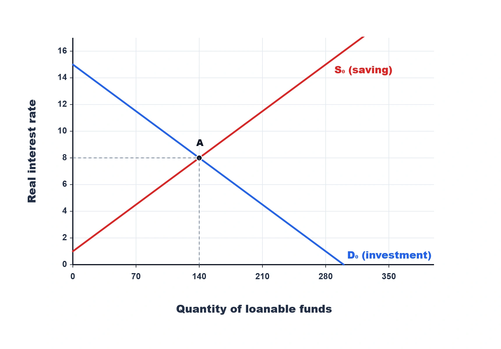
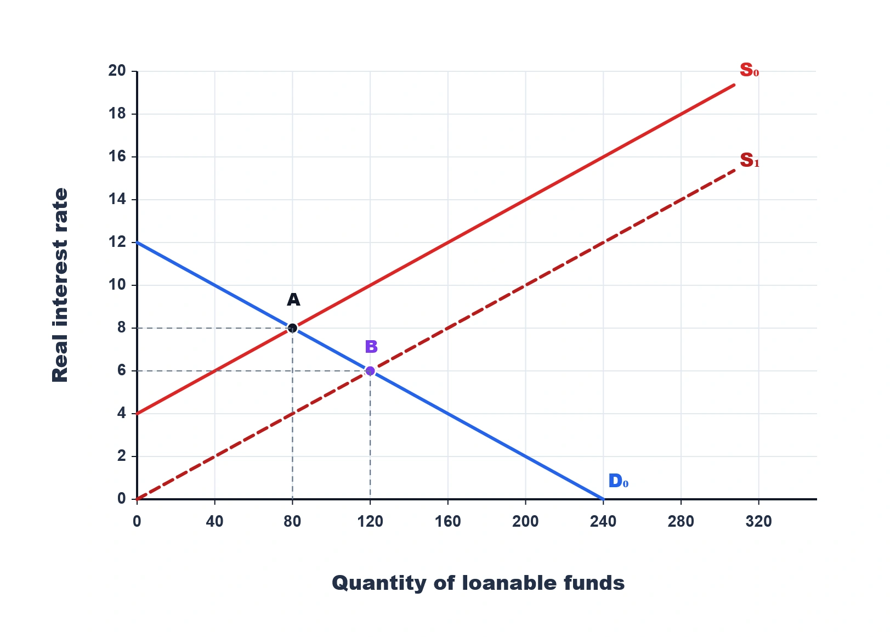
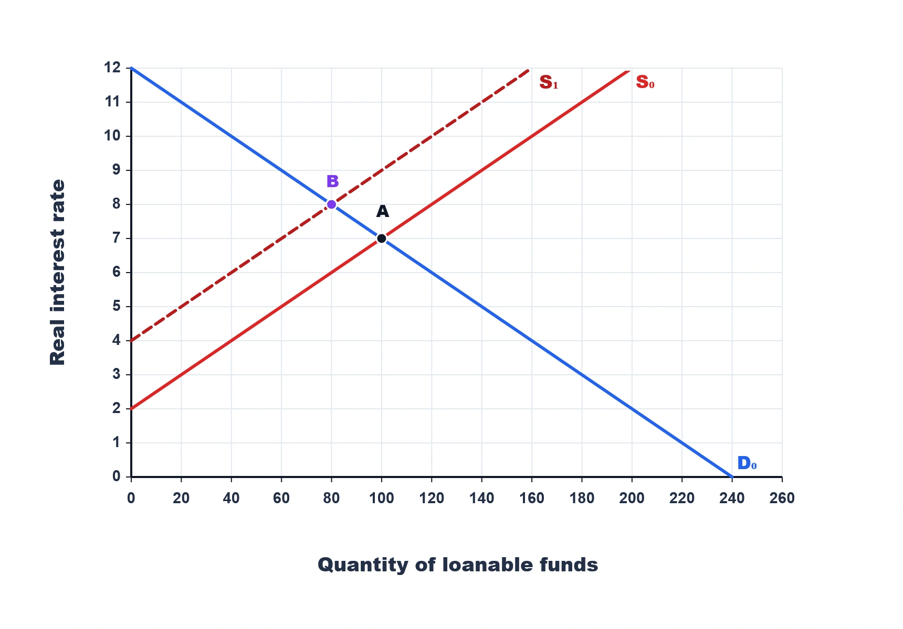
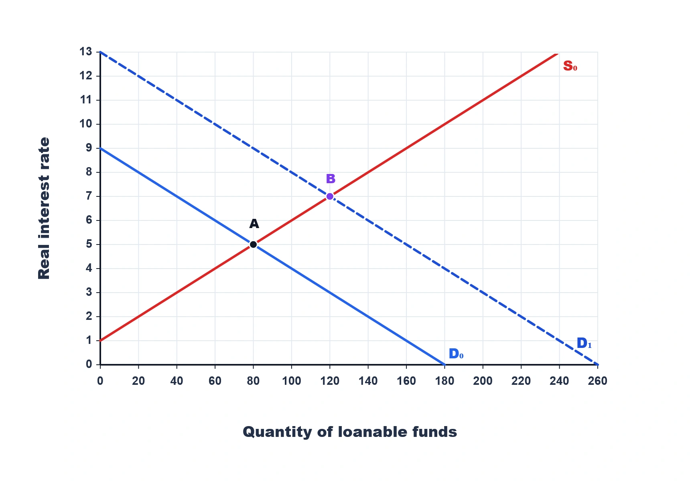
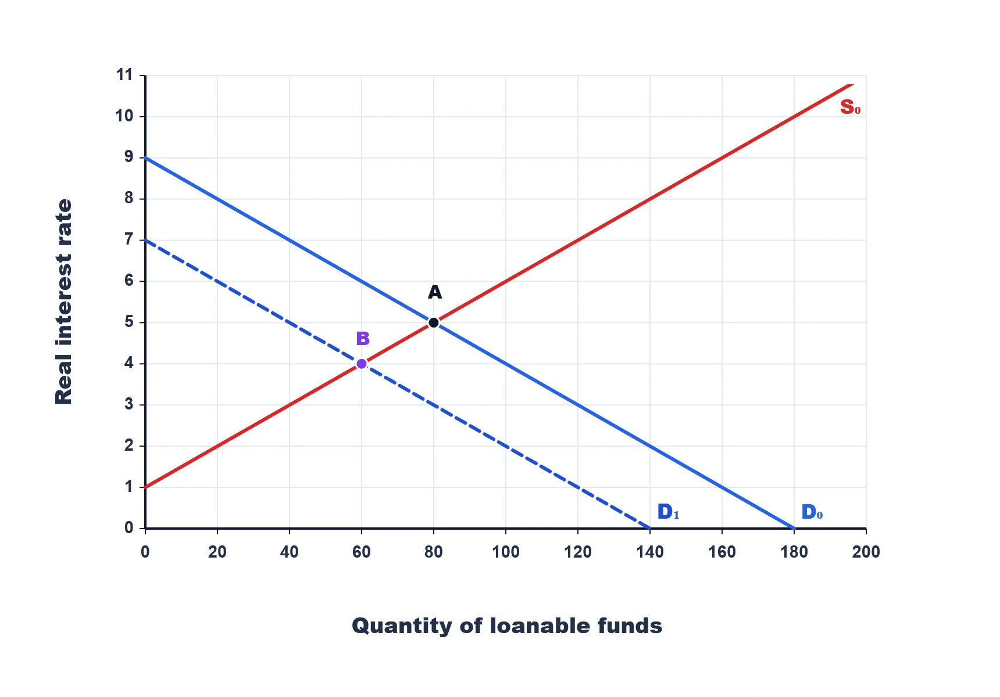
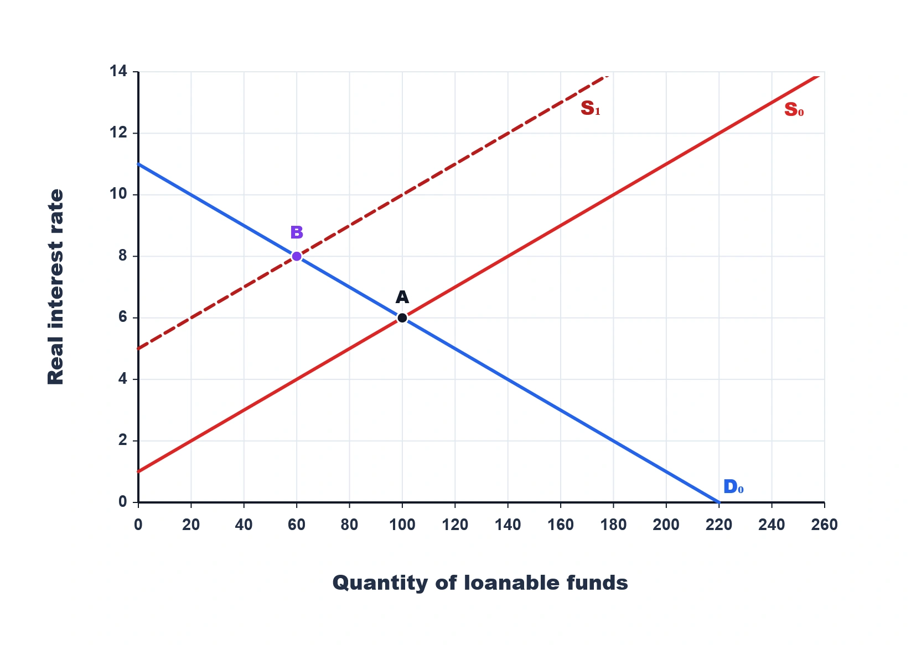
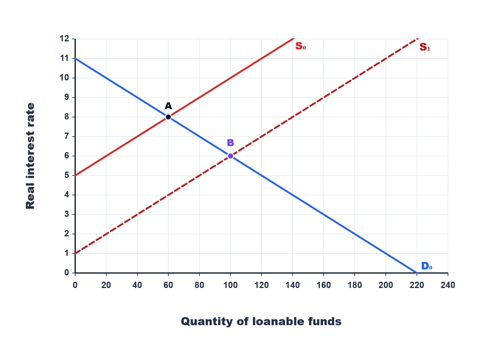
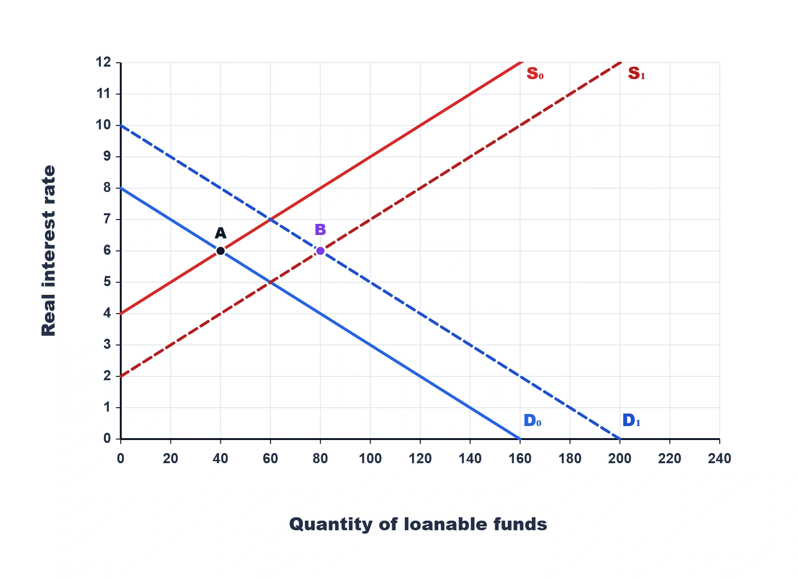

Faculty Difficulty Calibration Audit. Every high-difficulty graph item is included, followed by a representative non-graph sample. The first listed choice is the authored key; production rotation remains ID-based.
ID 43217SLF4 — Loanable-Funds Equilibriumelite / elitegraph_integrationCognition D: Multistep integration or simultaneous mechanisms
Refer to the graph above. Suppose the real interest rate is temporarily 10 percent while the curves remain fixed. Which adjustment is consistent with the market returning to point A?
- Excess saving pushes the rate down toward point A
- Excess investment demand pushes the rate higher as both curves shift right
- Excess saving shifts investment demand left until quantity reaches zero
- Saving and investment remain unequal because point A no longer represents equilibrium
Key: Excess saving pushes the rate down toward point A
Feedback: Above the 8 percent equilibrium, saving supplied exceeds investment demanded. Downward pressure on the rate moves the market along S0 and D0 until their planned quantities again match at A.
ID 43219SLF4 — Loanable-Funds Equilibriumlegendary / legendaryBossgraph_integrationCognition E: Synthesis, qualification, or limits of inferenceRefer to the graph above. In this closed economy, a student says point A proves that any increase in desired investment must be matched immediately by an identical outward shift of saving supply. What is wrong with the claim?
- Point A is the initial equilibrium; rate adjustment coordinates a new one
- Point A proves both curves must shift together because aggregate S = I at every possible rate
- The investment curve cannot shift because it represents an accounting identity rather than behavior
- Saving supply must shift left whenever expected investment profitability rises
Key: Point A is the initial equilibrium; rate adjustment coordinates a new one
Feedback: The graph shows equality at the initial intersection, not automatic equality of planned quantities after a shock. Higher desired investment can shift demand, after which the real rate coordinates movements toward a new equilibrium.
ID 43221SLF4 — Loanable-Funds Equilibriumhard / hardgraph_integrationCognition C: Causal or reverse inferenceRefer to the graph above. At a real interest rate above 8 percent, which comparison does the graph imply?
- Saving supplied exceeds investment demanded
- Investment demanded exceeds saving supplied
- Saving and investment remain equal
- Both curves shift to the right
Key: Saving supplied exceeds investment demanded
Feedback: Above A, the upward S0 curve lies to the right of D0, so the quantity supplied exceeds the quantity demanded.
ID 43224SLF4 — Loanable-Funds Equilibriumhard / hardgraph_integrationCognition C: Causal or reverse inferenceRefer to the graph above. If the rate moves from 8 percent to 10 percent without any curve shift, what pattern is visible?
- More saving supplied and less investment demanded
- Less saving supplied and more investment demanded
- Both saving and investment increase
- Both curves shift outward
Key: More saving supplied and less investment demanded
Feedback: Moving upward from A travels along both curves: quantity supplied rises while quantity demanded falls.
ID 43249SLF6 — Changes in Savinghard / hardgraph_integrationCognition C: Causal or reverse inference
Refer to the graph above. The market moves from A to B. Which event is inconsistent with the change shown?
- A new investment tax credit raises expected project profitability
- Households become more willing to save at every real rate
- A retirement incentive increases private saving
- A budget improvement increases public and national saving
Key: A new investment tax credit raises expected project profitability
Feedback: The graph shows saving supply shifting right while investment demand remains D0. An investment tax credit would instead shift investment demand right and would not by itself produce this diagram.
ID 43252SLF6 — Changes in Savinghard / hardgraph_integrationCognition C: Causal or reverse inferenceRefer to the graph above. Congress reduces government purchases while output and consumption remain fixed. Which explanation connects that policy to the movement from A to B?
- National saving and supply rise; the rate falls and investment rises
- National saving falls, shifting supply left; the higher rate lowers investment along demand
- Desired investment rises, shifting D0 right; saving supply remains fixed
- The lower rate itself shifts saving supply right and investment demand left
Key: National saving and supply rise; the rate falls and investment rises
Feedback: Lower government purchases raise Y − C − G and national saving. Supply shifts from S0 to S1; the lower equilibrium rate then increases investment through movement along D0.
ID 43255SLF6 — Changes in Savinghard / hardgraph_integrationCognition C: Causal or reverse inferenceRefer to the graph above. From A to B, firms undertake more investment because the real interest rate falls. How should the firm's response be classified?
- A movement down along D0 caused by the saving-supply shift
- A rightward shift from D0 because every increase in investment is a demand shift
- A leftward shift of D0 caused by the lower financing cost
- A movement up along S0 caused by improved expected profitability
Key: A movement down along D0 caused by the saving-supply shift
Feedback: The initiating change is the rightward saving-supply shift. Firms respond to the lower rate by moving along unchanged investment demand D0, rather than shifting that curve.
ID 43257SLF6 — Changes in Savingelite / elitegraph_integrationCognition D: Multistep integration or simultaneous mechanisms
Refer to the graph above. Private saving rises by $15 billion while a larger deficit reduces public saving by $30 billion. Which interpretation is consistent with A moving to B?
- National saving falls by $15 billion, shifting supply left and raising the real rate
- National saving rises by $45 billion, shifting supply right and lowering the real rate
- National saving falls by $15 billion, shifting investment demand left and lowering the rate
- National saving is unchanged because private and public saving changes cannot be combined
Key: National saving falls by $15 billion, shifting supply left and raising the real rate
Feedback: The net change in national saving is +15 − 30 = −$15 billion. The resulting leftward supply shift matches S0 to S1 and raises the equilibrium real interest rate.
ID 43259SLF6 — Changes in Savinglegendary / legendarygraph_integrationCognition E: Synthesis, qualification, or limits of inferenceRefer to the graph above. A deficit reduces public saving while a technological improvement raises expected investment returns. Why can this graph not represent the complete scenario?
- It omits the technology-driven rightward demand shift
- It shifts both curves right, although a deficit should shift supply left
- It shows investment demand shifting right but leaves saving supply fixed
- It is inconsistent because both shocks must lower the real interest rate
Key: It omits the technology-driven rightward demand shift
Feedback: The deficit is represented by the leftward saving-supply shift. The technology shock would also require a rightward investment-demand shift, which the graph does not display.
ID 43261SLF6 — Changes in Savinghard / hardgraph_integrationCognition C: Causal or reverse inferenceRefer to the graph above. Can the 20-unit decline in equilibrium quantity be interpreted as the horizontal size of the saving-supply shift?
- No; quantity also changes through movement along D0
- Yes; every change in equilibrium quantity equals the horizontal curve shift
- Yes; D0 is fixed, so firms cannot move along it
- No; the quantity decline must instead equal a leftward investment-demand shift
Key: No; quantity also changes through movement along D0
Feedback: The supply curve shifts, but the higher real rate also moves firms upward along unchanged D0. Therefore the change from 100 to 80 is an equilibrium response, not the horizontal shift magnitude.
ID 43269SLF7 — Investment Demandhard / hardgraph_integrationCognition C: Causal or reverse inference
Refer to the graph above. Both the real interest rate and equilibrium quantity rise from A to B while saving behavior is unchanged. Which diagnosis fits the evidence?
- Expected project profitability increased, shifting investment demand right
- Households became more willing to save, shifting loanable-funds supply right
- A larger deficit reduced public saving, shifting loanable-funds supply left
- The higher real rate itself shifted investment demand right
Key: Expected project profitability increased, shifting investment demand right
Feedback: With S0 fixed, higher expected profitability shifts investment demand from D0 to D1. That demand increase raises both the equilibrium real rate and quantity, as shown.
ID 43271SLF7 — Investment Demandelite / elitegraph_integrationCognition D: Multistep integration or simultaneous mechanismsRefer to the graph above. Improved technology raises investment demand, while households also become more willing to save. What limitation matters when using this graph for that scenario?
- It omits the household-saving supply shift
- It depicts the saving shift but keeps investment demand fixed
- It depicts both shifts and therefore proves the real rate must rise
- It cannot show investment demand because D1 is a saving curve
Key: It omits the household-saving supply shift
Feedback: The graph cleanly represents technology through D0 shifting to D1. The scenario also requires saving supply to shift right, but S0 remains fixed, so the full combined outcome is not shown.
ID 43273SLF7 — Investment Demandlegendary / legendarygraph_integrationCognition E: Synthesis, qualification, or limits of inferenceRefer to the graph above. Technology raises investment demand, but a new deficit simultaneously reduces national saving. Which conclusion goes beyond what this graph establishes?
- That the combined scenario must raise equilibrium quantity from 80 to 120
- Technology places upward pressure on the real interest rate
- The deficit would shift loanable-funds supply left
- The two shocks together place upward pressure on the real interest rate
Key: That the combined scenario must raise equilibrium quantity from 80 to 120
Feedback: This graph isolates a rightward demand shift with supply fixed. Adding a deficit would shift supply left; both shocks raise the rate, but their quantity effects oppose one another, so 120 is not guaranteed.
ID 43275SLF7 — Investment Demandhard / hardgraph_integrationCognition C: Causal or reverse inference
Refer to the graph above. The market moves from A to B while saving behavior remains unchanged. Which change best explains the joint decline in the real rate and quantity?
- Firms expect weaker future sales, shifting investment demand left
- Households save more at every real rate, shifting supply right
- A larger deficit reduces national saving, shifting supply left
- The lower real rate itself shifts investment demand left
Key: Firms expect weaker future sales, shifting investment demand left
Feedback: Weaker expected sales reduce desired investment at every rate, shifting D0 left to D1. With S0 fixed, both the equilibrium real rate and quantity fall.
ID 43278SLF7 — Investment Demandhard / hardgraph_integrationCognition C: Causal or reverse inferenceRefer to the graph above. The market moves from A to B with saving supply fixed. Which change could have caused this outcome?
- Firms expect weaker future demand for their output
- A tax credit raises expected investment profitability
- Households become more willing to save at every real rate
- A deficit reduces public saving while investment determinants remain fixed
Key: Firms expect weaker future demand for their output
Feedback: Weaker expected sales reduce desired investment at every real interest rate, shifting demand left from D0 to D1 and lowering both equilibrium variables.
ID 43287SLF8 — Government Deficits and Crowding Outhard / hardgraph_integrationCognition D: Multistep integration or simultaneous mechanisms
Refer to the graph above. A deficit rises by $30 billion while private saving increases by only $10 billion. Which chain matches the movement from A to B?
- Supply shifts left; the rate rises and investment falls along D0
- National saving rises $40 billion, supply shifts right, and investment rises along D0
- National saving falls $20 billion, D0 shifts left, and the real rate falls
- Public and private saving cancel, so neither curve moves from the initial equilibrium
Key: Supply shifts left; the rate rises and investment falls along D0
Feedback: The deficit-driven public-saving loss exceeds the private-saving gain, reducing national saving by $20 billion. The leftward supply shift raises the rate and crowds out investment along unchanged D0.
ID 43290SLF8 — Government Deficits and Crowding Outhard / hardgraph_integrationCognition C: Causal or reverse inferenceRefer to the graph above. Why is the fall in equilibrium investment from A to B a movement along D0 rather than a leftward shift of investment demand?
- Firms move along D0 after the deficit raises the real rate
- The deficit directly lowers expected project profitability at every real rate
- Any decline in investment quantity requires the demand curve itself to shift
- The graph shows D0 moving left while saving supply remains fixed
Key: Firms move along D0 after the deficit raises the real rate
Feedback: The fiscal shock reduces public and national saving, shifting supply left. The higher equilibrium rate makes fewer projects profitable, so investment falls along the unchanged D0 curve.
ID 43293SLF8 — Government Deficits and Crowding Outhard / hardgraph_integrationCognition C: Causal or reverse inference
Refer to the graph above. Private saving rises by $30 billion while public saving falls by $10 billion. Which interpretation is consistent with A moving to B?
- Supply shifts right; the rate falls and investment rises
- National saving falls $40 billion, shifting supply left and reducing investment
- National saving rises $20 billion, shifting investment demand right and raising the rate
- National saving is unchanged because public saving offsets all private-saving changes
Key: Supply shifts right; the rate falls and investment rises
Feedback: The net change in national saving is +$20 billion. Greater loanable-funds supply shifts right, lowers the equilibrium real rate, and increases investment along unchanged demand.
ID 43295SLF8 — Government Deficits and Crowding Outelite / elitegraph_integrationCognition D: Multistep integration or simultaneous mechanismsRefer to the graph above. A budget improvement raises public saving by $25 billion while private saving falls by $10 billion. What connects the accounting to the new equilibrium?
- National saving rises, shifting supply right and increasing investment along D0
- National saving falls $35 billion, shifting supply left; the higher rate reduces investment
- National saving rises $15 billion, shifting D0 right; the real rate and quantity both rise
- National saving remains fixed, so the move to B must come from weaker investment demand
Key: National saving rises, shifting supply right and increasing investment along D0
Feedback: Public and private saving changes sum to +$15 billion. The resulting supply increase matches S0 to S1; the lower rate then raises investment through movement along D0.
ID 43297SLF8 — Government Deficits and Crowding Outlegendary / legendarygraph_integrationCognition E: Synthesis, qualification, or limits of inferenceRefer to the graph above. In this closed economy, a student says the rise in investment from A to B occurs ‘because S = I forces firms to invest every extra unit households save at the old rate.’ Which correction is best?
- Rate adjustment, not the identity alone, induces the investment increase
- The claim is correct because the accounting identity removes any role for the real interest rate
- Higher saving shifts investment demand right directly, so firms invest more at every rate
- S = I applies only to individual saver-firm pairs and not to the aggregate market
Key: Rate adjustment, not the identity alone, induces the investment increase
Feedback: The identity does not specify a behavioral one-for-one transfer at the old rate. Greater saving shifts supply, the real rate adjusts downward, and firms move along demand to the new equilibrium quantity.
ID 43299SLF8 — Government Deficits and Crowding Outhard / hardgraph_integrationCognition C: Causal or reverse inferenceRefer to the graph above. What market evidence indicates less crowding out than at A?
- A lower rate accompanies greater equilibrium investment
- A higher rate accompanies less investment
- Demand shifts left with saving fixed
- Both curves remain at their old positions
Key: A lower rate accompanies greater equilibrium investment
Feedback: More national saving lowers the real rate from 8 to 6 percent and raises investment from 60 to 100.
ID 43305SLF9 — Simultaneous Shiftshard / hardgraph_integrationCognition D: Multistep integration or simultaneous mechanisms
Refer to the graph above. Saving supply and investment demand both increase. What does theory establish before the graph's marked intersections resolve the remaining issue?
- Quantity rises; theory leaves the rate ambiguous, but this graph shows no change
- The real rate must rise, while quantity is theoretically ambiguous; this graph shows quantity unchanged
- Both variables are theoretically ambiguous; the graph shows both falling
- Quantity must fall, while the real rate must remain unchanged in every such case
Key: Quantity rises; theory leaves the rate ambiguous, but this graph shows no change
Feedback: Both rightward shifts raise equilibrium quantity. Supply puts downward pressure on the real rate while demand puts upward pressure on it; the marked A and B intersections show those pressures offset here.
ID 43307SLF9 — Simultaneous Shiftselite / elitegraph_integrationCognition E: Synthesis, qualification, or limits of inferenceRefer to the graph above. In general, simultaneous rightward shifts make the real-rate effect ambiguous. What does this particular outcome imply about the depicted shift magnitudes?
- The rate pressures offset while both shifts raise quantity
- The saving shift is absent because the real rate did not fall
- The investment-demand shift dominates, so the real rate must rise above 6 percent
- Both shifts reduce quantity, but equal magnitudes conceal the decline
Key: The rate pressures offset while both shifts raise quantity
Feedback: A rightward supply shift pushes the rate down and a rightward demand shift pushes it up. The unchanged 6 percent rate shows offsetting rate effects, while both shifts raise quantity from A to B.
ID 43309SLF9 — Simultaneous Shiftslegendary / legendarygraph_integrationCognition E: Synthesis, qualification, or limits of inferenceRefer to the graph above. Private saving rises by $25 billion, public saving falls by $10 billion, and technology raises desired investment. Which interpretation uses both the accounting and the graph?
- National saving and both curves shift right; rate pressures offset and quantity rises
- National saving falls, both curves shift left, and the graph shows a lower equilibrium quantity
- National saving rises, only supply shifts right, and the graph proves technology had no effect
- National saving is unchanged, only demand shifts right, and the graph shows the real rate rising
Key: National saving and both curves shift right; rate pressures offset and quantity rises
Feedback: Private and public changes raise national saving by $15 billion, shifting supply right; technology shifts demand right. Both raise quantity, while the graph shows their opposing real-rate pressures offset at 6 percent.
ID 43311SLF9 — Simultaneous Shiftshard / hardgraph_integrationCognition C: Causal or reverse inferenceRefer to the graph above. Which pair of events could produce the two rightward shifts?
- More household saving and more profitable investment projects
- Less household saving and weaker expected profits
- A higher real rate and lower consumption
- A deficit and weaker investment incentives
Key: More household saving and more profitable investment projects
Feedback: Greater saving shifts S right, while stronger profitability shifts investment demand right.
ID 43314SLF9 — Simultaneous Shiftshard / hardgraph_integrationCognition C: Causal or reverse inferenceRefer to the graph above. Why can the real interest rate remain at 6 percent even though equilibrium quantity doubles?
- The shifts' opposing rate pressures offset in this graph
- Simultaneous rightward shifts always leave the real interest rate unchanged
- The quantity axis fixes the real interest rate whenever quantity increases
- Both curves are vertical at point B, so neither shift affects the rate
Key: The shifts' opposing rate pressures offset in this graph
Feedback: The two shocks reinforce one another on equilibrium quantity but have opposing effects on the real rate. In this graph, their depicted magnitudes leave the new intersection at 6 percent.
ID 43170SLF1 — Saving Versus Investmenthard / finalBossintegrationCognition C: Causal or reverse inferenceA household buys existing shares from another investor. Later, the corporation issues new bonds and uses the proceeds to build a factory. Which statement correctly distinguishes the transactions?
- Only the new factory is current GDP investment
- Both securities trades are current GDP investment because money changes hands
- Only the existing-share purchase is current GDP investment because it changes ownership
- Neither the bond issue nor the factory affects saving, financing, or current production
Key: Only the new factory is current GDP investment
Feedback: Existing-share trades transfer financial claims. Newly issued bonds can channel saving to the firm, but the newly produced factory is the transaction counted as current macroeconomic investment.
ID 43173SLF1 — Saving Versus Investmenthard / finalBossapplicationCognition C: Causal or reverse inferenceA firm produces $12 million of goods this year but sells them next year without producing replacements. How are the two years affected, all else equal?
- Inventory investment rises this year and falls next year
- Consumption rises this year and inventory investment is unchanged next year
- Inventory investment falls this year and rises again when the goods are sold
- The goods count as financial investment in both years because ownership changes
Key: Inventory investment rises this year and falls next year
Feedback: Unsold current production adds $12 million to inventories this year. Selling those previously produced goods next year reduces inventories, creating negative inventory investment then.
ID 43179SLF1 — Saving Versus Investmenthard / finalBossinterpretationCognition C: Causal or reverse inferenceAn investor buys an existing corporate bond from another household, and the issuer receives none of the sale proceeds. Which inference is justified?
- It only reallocates an existing financial claim
- The issuer's investment rises automatically by the bond's resale price
- National saving falls because every secondary-market trade uses saved funds
- The trade creates inventory investment because the bond remains unsold by the issuer
Key: It only reallocates an existing financial claim
Feedback: A secondary-market bond sale changes who owns the claim. With no new proceeds to the issuer and no new production specified, it creates no direct GDP investment.
ID 43184SLF2 — Private, Public, and National Savinghard / finalBossintegrationCognition D: Multistep integration or simultaneous mechanismsIncome is $1,000, net taxes are $180, consumption is $650, and government purchases are $220. If government purchases then rise by $30 with the other values fixed, which result follows?
- Private saving stays $170; public and national saving fall $30
- Private saving falls to $140; public saving is unchanged, shifting investment demand left
- Private saving stays $170; public and national saving each rise by $30, shifting supply right
- Private saving rises to $200; national saving is unchanged because taxes did not change
Key: Private saving stays $170; public and national saving fall $30
Feedback: Private saving is Y − T − C = $170. Higher G does not change that amount, but it lowers T − G and national saving by $30, so loanable-funds supply shifts left.
ID 43187SLF2 — Private, Public, and National Savinghard / finalBossintegrationCognition C: Causal or reverse inferencePrivate saving rises by $25 billion while public saving falls by $40 billion. What happens in the loanable-funds market, all else equal?
- National saving falls by $15 billion, shifting supply left and raising the equilibrium real rate
- National saving rises by $65 billion, shifting supply right and lowering the real rate
- National saving rises by $15 billion, shifting investment demand right and raising the real rate
- National saving is unchanged because private and public saving always offset one another
Key: National saving falls by $15 billion, shifting supply left and raising the equilibrium real rate
Feedback: The two components change national saving by +25 − 40 = −$15 billion. Lower national saving shifts loanable-funds supply left, raising the real rate and reducing equilibrium investment.
ID 43175SLF1 — Saving Versus Investmentelite / eliteintegrationCognition D: Multistep integration or simultaneous mechanismsHouseholds reduce current consumption and buy a firm's newly issued bonds. The firm uses the proceeds for new machinery and to purchase an existing office building. Which chain is economically correct?
- Saving finances the firm, but only the new machinery is current GDP investment
- Both firm purchases are current GDP investment because both use borrowed funds
- The bond purchase is physical investment, while neither firm purchase enters GDP
- Household saving enters GDP directly, and the machinery is only a financial asset
Key: Saving finances the firm, but only the new machinery is current GDP investment
Feedback: The bond market channels household saving to the borrower. New machinery is current production and GDP investment; transferring an existing building is not new production.
ID 43189SLF2 — Private, Public, and National Savingelite / eliteintegrationCognition D: Multistep integration or simultaneous mechanismsPrivate saving increases by $25 billion, but a larger deficit reduces public saving by $40 billion. With investment demand unchanged, which sequence follows?
- National saving falls by $15 billion; supply shifts left, the real rate rises, and investment falls
- National saving rises by $65 billion; supply shifts right, the real rate falls, and investment rises
- National saving falls by $15 billion; investment demand shifts left, lowering both rate and quantity
- National saving rises by $15 billion; supply shifts right, but investment necessarily falls
Key: National saving falls by $15 billion; supply shifts left, the real rate rises, and investment falls
Feedback: The public-saving decline is larger than the private-saving increase, so national saving falls by $15 billion. Supply shifts left, raising financing costs and crowding out investment along demand.
ID 43203SLF3 — Saving and Investment in a Closed Economyelite / eliteintegrationCognition D: Multistep integration or simultaneous mechanismsIn a closed economy, private saving rises by $20 billion while public saving falls by $35 billion. At the same time, new technology raises desired investment. What can be concluded without shift magnitudes?
- Supply shifts left, demand shifts right; the rate rises and quantity is ambiguous
- Both curves shift right; quantity rises, while the real rate is ambiguous
- Supply shifts left only; both the real rate and quantity must fall
- Investment demand shifts right only; the real rate rises and quantity must rise
Key: Supply shifts left, demand shifts right; the rate rises and quantity is ambiguous
Feedback: National saving falls by $15 billion, shifting supply left. Technology shifts investment demand right. Both changes raise the real rate, but they push equilibrium quantity in opposite directions.
ID 43229SLF4 — Loanable-Funds Equilibriumelite / eliteintegrationCognition D: Multistep integration or simultaneous mechanismsA higher real return encourages households to postpone consumption, while a new retirement incentive increases saving at every real rate. How should these effects be represented?
- Movement along supply, followed by a rightward supply shift
- Both changes shift saving supply right because each raises observed saving
- The higher rate shifts supply right, while the incentive causes movement along the curve
- Both changes cause movement along the original saving curve because neither affects demand
Key: Movement along supply, followed by a rightward supply shift
Feedback: The current real rate determines a quantity supplied on a given curve. A retirement incentive changes saving behavior at every real rate, so it shifts the whole curve.
ID 43243SLF5 — Movement Along Versus Shiftelite / eliteintegrationCognition D: Multistep integration or simultaneous mechanismsA saving incentive shifts loanable-funds supply right. The lower equilibrium real rate makes more investment projects profitable, and firms also become more optimistic about future sales. Which description is complete?
- Movement along demand, followed by a separate rightward demand shift
- Both investment increases are movements along demand because firms ultimately borrow more
- Both investment increases shift demand because the equilibrium rate changes
- The saving incentive shifts investment demand right, while optimism moves firms along that curve
Key: Movement along demand, followed by a separate rightward demand shift
Feedback: The saving shock lowers the rate and causes movement along the existing investment-demand curve. Optimism changes desired investment at every rate, so it separately shifts demand right.
ID 43177SLF1 — Saving Versus Investmentlegendary / legendaryBossintegrationCognition E: Synthesis, qualification, or limits of inferenceA software firm develops a new platform for long-term use, buys an existing patent from another firm, and issues shares to finance both activities. Which evaluation is most accurate?
- Only the new platform may be current intellectual-property investment
- All three activities are current intellectual-property investment because each has a price
- Only the share issue is current GDP investment because it raises financial capital
- The existing patent purchase creates new output, while developing the platform is current consumption
Key: Only the new platform may be current intellectual-property investment
Feedback: Qualifying development creates a new productive intangible asset. Buying an existing patent and issuing shares transfer ownership or financial claims rather than independently creating current output.
ID 43191SLF2 — Private, Public, and National Savinglegendary / legendaryBossintegrationCognition D: Multistep integration or simultaneous mechanismsInitially Y = $900, T = $150, C = $600, and G = $180. Net taxes then rise by $20 and government purchases rise by $35 while Y and C stay fixed. What changes?
- Private saving falls $20, public saving falls $15, and national saving falls $35
- Private saving rises $20, public saving rises $15, and national saving rises $35
- Private saving falls $20, public saving rises $20, and national saving is unchanged
- Private saving is unchanged, public saving falls $35, and national saving falls $15
Key: Private saving falls $20, public saving falls $15, and national saving falls $35
Feedback: Higher net taxes reduce private saving by $20. Public saving changes by +$20 − $35 = −$15. Together, national saving falls $35, matching the change in Y − C − G.
ID 43205SLF3 — Saving and Investment in a Closed Economylegendary / legendaryBossintegrationCognition E: Synthesis, qualification, or limits of inferenceA student argues: ‘Because S = I in a closed economy, desired saving and desired investment are automatically equal at every real interest rate, and each saver funds one firm.’ Which correction is complete?
- An aggregate equilibrium identity coordinated through financial markets
- S = I applies to each household, but only when the government budget is balanced
- S = I means desired quantities can differ permanently because the real rate has no coordinating role
- S = I is a rule for open economies only and does not describe aggregate accounting
Key: An aggregate equilibrium identity coordinated through financial markets
Feedback: The equality concerns aggregate realized saving and investment in the closed-economy model. Planned quantities need not match away from equilibrium, and intermediaries pool funds rather than pair savers with firms.
ID 43231SLF4 — Loanable-Funds Equilibriumlegendary / legendaryBossintegrationCognition E: Synthesis, qualification, or limits of inferenceAt a real interest rate below equilibrium, desired investment exceeds desired saving. A student claims this disproves S = I in a closed economy. Which response is correct?
- Planned quantities can differ; rate adjustment restores aggregate equilibrium
- The student is correct because any planned imbalance permanently invalidates national accounting
- S = I requires every saver to lend directly to one investor at the posted rate
- The gap shows that closed economies can finance investment only through unrecorded foreign saving
Key: Planned quantities can differ; rate adjustment restores aggregate equilibrium
Feedback: Planned supply and demand can differ at a disequilibrium rate. Excess demand creates upward rate pressure, coordinating decisions at equilibrium without turning the aggregate identity into one-to-one behavior.
ID 43245SLF5 — Movement Along Versus Shiftlegendary / legendaryBossintegrationCognition D: Multistep integration or simultaneous mechanismsImproved technology raises expected project returns, and the resulting equilibrium real interest rate rises. How should a firm's investment response be decomposed?
- Demand shifts right; the higher rate partly offsets the increase
- Technology causes movement along demand, while the higher rate shifts demand left
- Both changes shift investment demand right because desired investment initially increases
- The higher rate shifts saving supply left, leaving investment demand unchanged
Key: Demand shifts right; the higher rate partly offsets the increase
Feedback: Technology changes profitability at every rate and shifts demand right. The higher equilibrium rate is an endogenous price change that reduces quantity demanded along the shifted curve.